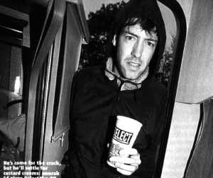

ED O'BRIEN

TIME: Saturday 4.20pm on
the cusp of a downpour, the Radiohead guitarist popped round to a
Select caravan for tea
and sympathy. We gave him a pint and some custard creams.
"Why have I come to
Glastonbury? For the crack [laughs]. We played last year
and, obviously, we didn't enjoy it very much. So this year we got
a bit of time off and I thought, 'What better than four
gloriously sunny days in the West Country?' Everybody's saying it
can't be as bad as last year..."
You weren't out among it last year,
though.
"I wasn't. I was here for six
hours [laughs]. I'm having a really good time,
surprisingly. Honestly, I am. The only thing is, I've got mates
out there, and they couldn't get in back here, and they're in
tents, and the tents slide away... and they've left. That's a bit
bad.
"Am I camping? Sort of [laughs].
I've got one of those mobile home things. I've been smoking a
bit, seeing a few bands. I saw Gomez on the main stage, who I
thought were fantastic. That was really good. I'm going to see
them tonight as well. I'm not really one for 'Go and check out
the band everybody's talking about'. I like the stuff in the
tents.
"Obiously there was the
football last night. I listened to it on the radio. It was
wicked. Am I going to last the whole distance? I think so. I'm
going home on Monday. I hate to sound like a hippy but, walking
around, people seem very resilient. The human spirit is pretty
strong out there. It's only us bastards back here who moan.
"I am the only Radiohead
member down here, yeah. The others talked about coming, but they
were checking the weather forecast. Phil mike come today, but I
was trying to persuade them all. They're far too sensible.
They're all back in Oxford.
[It now begins to piss down.]
"This is fucking mad. I'm
seriously tempted, if it carries on like this... I'm off
tomorrow. Why don't they move it? Can't they move it to July or
something? It's because of the Solstice? Yeah, but that's
bollocks. No, it is. Bollocks."
JOHN HARRIS